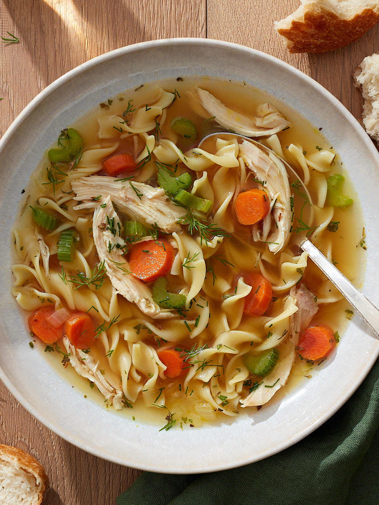

United States of America
Chicken Noodle Soup
Ingredients
*note: These will be approximate and not exact!
Instructions
In a medium size pot. Add water half way, add 1-2 chicken boulion cube. Place 2 chicken breast in water.
Bring water to boil. Add chicken breast and cover with lid. Cook until you can pull
apart the chicken breast easily, it will take around 25-30 minutes.
Then remove chicken out of stove, into a cutting board and use fork to shred chicken.
In a large pot. Add olive oil till hot. Cut up celery, carrots, and onion. Add onion to the pot and sauteed
until onion change slightly in color, add salt, pepper, garlic salt to the onion. Then add garlic, sauteed for 2-5 minutes. Then add carrots and celery at the
same time. Sauteed the veggies for 5-7 minutes. Then add the shredded chicken. Add the chicken broth (32-64 Oz of chicken broth or water/chicken boulion mixture of the same amount).
Bring pot to boil. Add the egg noodles. Cover, and let it cook until noodles are tender.
Add peas and cilantro 5 minutes until end of cooking process. Season to taste. Remove soup from heat and let it stand for 20 minutes.
Serve and eat!